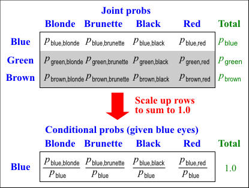

Sometimes we are interested in situations where we have partial knowledge about the outcome of an experiment. Information from this partial knowledge is expressed via conditional probability.
Definition
The conditional probability that an event \(A\) occurs, given that \(B\) is known to have occurred is
\[ P(A \mid B) = \frac {P(A \textbf { and } B)} {P(B)} \]If the events \(A\) and \(B\) correspond to categories of two categorical variables and the probabilities for the possible combinations of the variables' values are laid out in a table (i.e. their joint probabilities), the conditional probabilities correspond to scaling rows or columns of the table to sum to one.

Two sets of conditional probabilities
Note that there is an equivalent formula for conditional probability of \(B\) given that \(A\) has occurred.
\[ P(B \mid A) = \frac {P(A \textbf { and } B)} {P(A)} \]You should be careful to distinguish between \(P(A \mid B)\) and \(P(B \mid A)\). They have different interpretations and usually also have different values.
The probability of being pregnant, given that a randomly selected person is female would be fairly small. The probability of being female, given that a person is pregnant is 1.0 !!